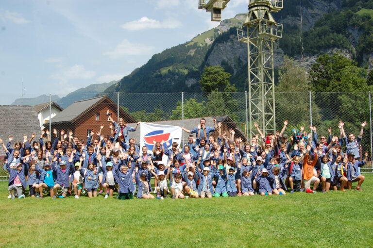

Verein CEVI March
Wir trauen Gott, den Menschen und uns selber Grosses zu.
So lautet das Leitbild des CEVI Schweiz. „Grosses“ beinhaltet das Organisieren von Lagern, Wochenenden und Jungscharnachmittagen, das Bauen von Seilbrücken und abenteuerliche Nacht-Actions. „Grosses“ beinhaltet aber auch Gemeinschaft, Vertrauen, Freundschaft, Respekt (gegenüber Mensch und Natur) und Spass.
Der Verein CEVI March fördert aktiv die Entstehung von solch „grossen“ Dingen, indem er die Jungschar CEVI March ideell und finanziell unterstützt. Das bedeutet konkret: Der Verein CEVI March schenkt den jungen Menschen, die „Grosses“ für die Kleinen organisieren, Vertrauen und ermöglicht ihnen eine gute Ausbildung in Pädagogik, Seiltechnik, 1. Hilfe usw., indem er die Ausbildungskurse bezahlt, hilft bei grösseren Anschaffungen wie z.B. Lagerzelten aus und steht bei Fragen stets zur Seite.
Werden Sie für 100.– im Jahr Mitglied im Verein CEVI March
… und unterstützen Sie damit wertvolle Arbeit von Jungen für Junge!
Einzahlung für: Schwyzer Kantonalbank, 6431 Schwyz
Zugunsten von: CH73 0077 7008 0401 8029 2, Konto 60-1-5, CEVI March, Gartenstrasse 4, 8853 Lachen SZ
Zahlungszweck: Jahresmitgliedschaft Verein
Vorstand
Der Verein trifft sich einmal jährlich zur Generalversammlung. Der Vorstand (zusammengesetzt aus PräsidentIn, AktuarIn, KassierIn, BeisitzerIn und der Abteilungsleitung der Jungschar) trifft sich in der Regel 3× jährlich.
- Präsidentin: Rosmarie Obrist
- Aktuar: Marco Emma
- Kassier: Fabian Niederer
- Beisitzerin: Sandra Kohler
- Abteilungsleitung: Noah Zimmer und Shannon Welte
Bei Fragen gibt die Präsidentin Rosmarie Obrist gerne Auskunft: verein@cevimarch.ch oder per Telefon 055 442 28 51.
100.– im Jahr, und die Jungschar kann ihre Kurse zahlen.

Komm doch einfach mal vorbei.
Schnuppern ist jederzeit und unverbindlich möglich – melde dich kurz bei der Stufenleitung, zieh Kleider an, die dreckig werden dürfen, und los gehts.
So gehts